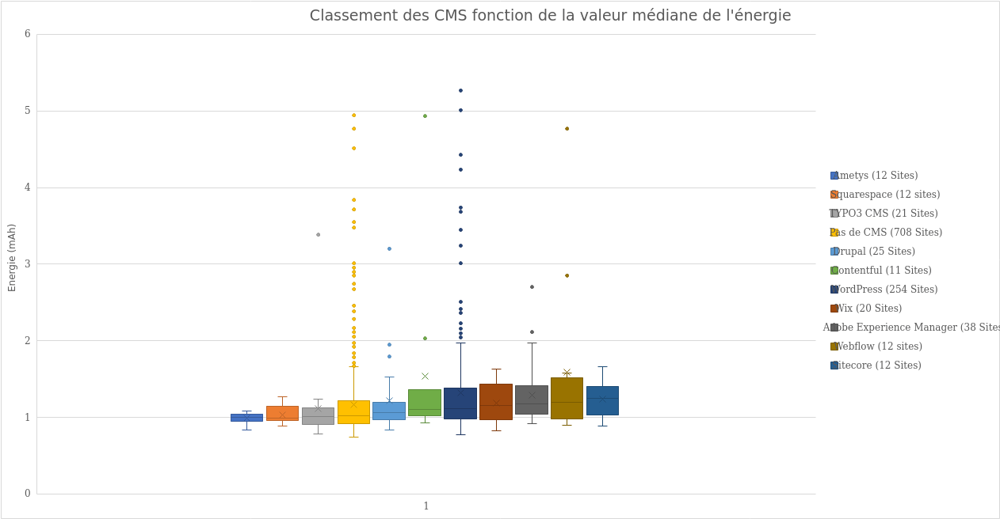
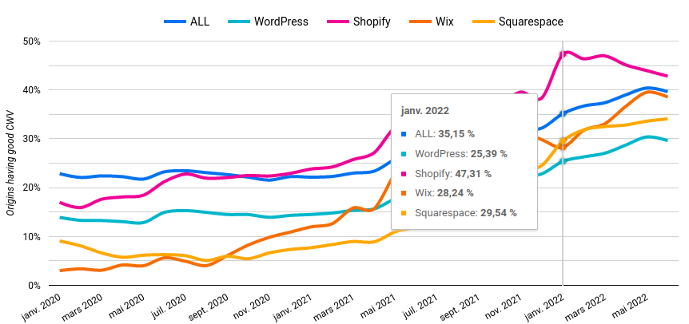
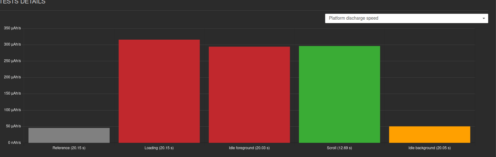
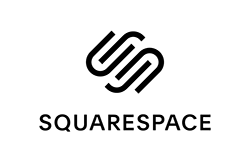
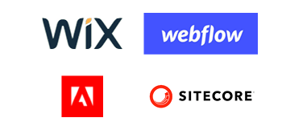

Today, we are studying the impact of solutions allowing the implementation of websites without knowledge of coding. Among these solutions, we can include CMS (Content Management System) but also No Code solutions.
This article is the first in a series where we analyze the measurements of 1500 sites through our tools.
In these articles, we will deal with the impact of technologies, and parameters…
Methodology disclaimer:
We have measured more than 1500 sites on real devices via our benchmark suites allowing the realization of automated tests (launch of the site, waiting, scrolling, sitting in the background). We then retrieve technology information from these sites via the WepAnalyzer solution.
We have chosen to focus our analysis on energy consumption. Consuming energy affects battery life on user devices, which ultimately impacts the environment.
How to read the graphs?
We visualize the data by “box plot” graphs:
- The centre bar indicates the median. The rankings are made with this data.
- The top and bottom of the box are bounded by the 25th and 75th quantiles.
- The size of the box is called the interquartile range (IQR)
- The bars at the top and bottom are the whiskers and delimit the expected values
- Whiskers expand at 1.5 IQR
- Values outside the whiskers are visualized via dots. They represent either errors or outliers.
We deliberately discarded sites that did not have enough samples (for example less than 10 sites with a certain technology).
How are CMS and No Code solutions positioned?
Ranking of CMS according to the median value of energy.

We find the most widespread technologies (according to Web Core Vitals), apart from Shopify (these sites must be classified in the “No CMS” category).

We observe a 20% difference between the most efficient solution (Ametys) and the least efficient (Webflow).
Three CMS are positioned ahead of sites without CMS. Popular CMS like Drupal and WordPress are lagging behind. The last four solutions are No Code solutions.
There are many outliers in some categories (WordPress, sites without CMS). It is explained by a large data set (several hundred sites). An exploratory analysis of these sites generally shows that they are sites with fairly heavy streaming processing (such as video). Here is an example of a site positioned in “outlier“ the loading and idle stage (inactive site) consume a lot given an animation that runs continuously.

Quelques pistes d’explications à l’analyse des CMS :
Ametys: a domain-specific CMS
Ametys is a specific CMS which is used for institutional sites. Our ranking of school websites, in which many schools use this technology, explains its presence in this ranking. Its good positioning would have to be analyzed from a technical point of view. However, we can deduce that a solution that targets a type of need will be more optimizable than a generic solution. The integration of multiple functionalities in a CMS will indeed lead to overconsumption. We also observe that these institutional sites include fewer modules than the other sites. It is ultimately about functional sobriety.

Squarespace: an all-in-one solution
Squarespace is a publisher-hosted CMS. On the sites analyzed, we can identify there are few requests (<30), so there are potentially integrated optimization solutions. In other tracks, all the resources are hosted on Squarespace, and the assets (or assets) are on dedicated servers. The hosting of the CMS by the publisher is indeed a good thing because it will allow systematic and shared optimizations. However, this is not necessarily native. The editor must apply it.
Typo 3: native optimization options
Typo 3 which is an open source solution is in 3rd position. An HTTP Archive ranking is confirming this positioning. Fine cache management and native optimization options explain this performance.
Sites without CMS
Sites without CMS integrate a heterogeneity of technical solutions. It is difficult to draw conclusions. However, the median of the sites is positioned very well compared to other solutions (No Code, WordPress, Drupal, etc.). The low moustache is the lowest compared to all the other solutions. As a result, significant efficiency can be achieved more easily.
Drupal: a professional CMS
Drupal is positioned just after sites without a CMS. The good positioning of this CMS is explained by its less accessible setup and start-up process than WordPress.
Contentful: a headless CMS
Contentful is a “no interface” CMS. It allows you to publish content from other tools. The efficiency gain is present for the publication (because we do not use our usual tools). However, we observe that this CMS is just as efficient as a classic CMS.
WordPress : un CMS simple et très répandu
The WordPress platform is very popular and offers many plugins and themes. But genericity and modularity come at a price. Non-technical users can use this CMS. A potential explosion of plugins and non-configuration of the CMS in terms of performance and efficiency are the counterparts. We see in relation to the low moustache that the CMS can be efficient. However, this requires a lot of work.

Wix, Webflow, SiteCore, Adobe: No Code or equivalent solutions
These solutions offer the user the possibility of creating a website without coding knowledge. The median is high. The low whiskers are also higher than other solutions. It shows that they are heavier solutions.
Conclusion
From a statistical point of view, CMS solutions do not all have the same efficiency. The initial design, taking into account optimizations, will be essential to achieve good performance (case of Typo 3). We observe that end-to-end control, combined with good practices implementations (Squarespace), also makes it possible to achieve a good efficiency level. In the same way, specializing in a CMS (Ametys) and therefore the options that go with it will allow you to obtain good results.
However, on the other hand, making a very generic and modular CMS (WordPress), even if potentially efficient initially, will bring bloatware. In the same way, the No Code will add a heaviness. It remains to identify the causes of this heaviness. Indeed, it can come from levels of abstraction but also from rendering possibilities (interactivity, animations, etc.) which are easily possible and which lead the user to add more than is necessary. In addition, the use of a “generalist” CMS is also potentially representative of a lack of precision in the need.
For a CMS solution (and more generally any solution), sobriety will not be innate. It will be necessary to apply a set of good practices:
- Efficient architecture and technology, although if we take current technologies the difference between the solutions is very small, and the impact comes more from the misuse of technologies.
- Native integrations of optimizations or easily activated by use.
- Functionality limitation mechanism or in any case sensitizing the user to bloatware.
- More generally, think about the end-to-end issue, taking into account hosting, and CDN (Content Delivery Network); without going to end-to-end managed solutions, we see that the distribution of systems is not necessarily a good thing.
- In order to always offer more flexibility to the user, and among other things to allow non-technical people to create sites, it is necessary to integrate optimization solutions natively, which is not at all currently the case.
Do you want to include a CMS in this ranking? Contact us and send us at least 20 links to sites using technology, we will integrate them into the measures and within our ranking!
For our next article, we will go into the finer analysis of WordPress data to observe which parameters and configurations influence environmental performance.